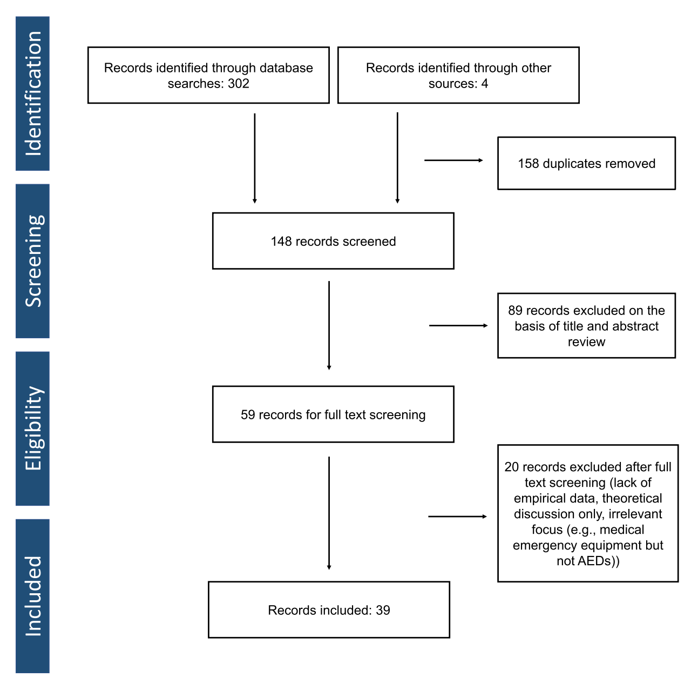
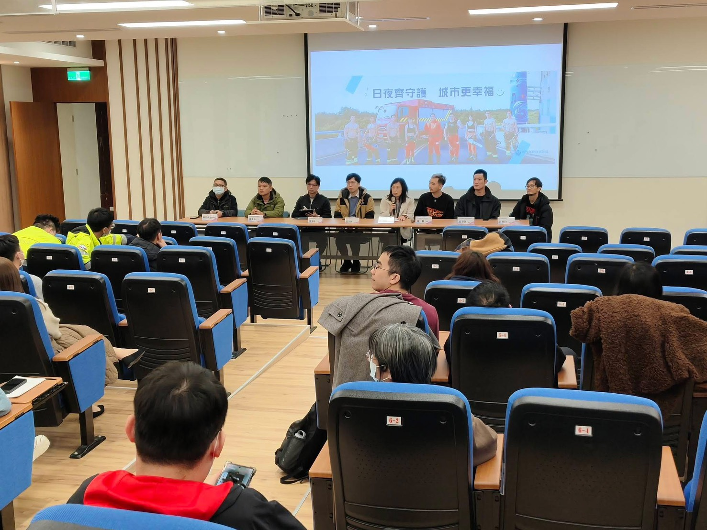
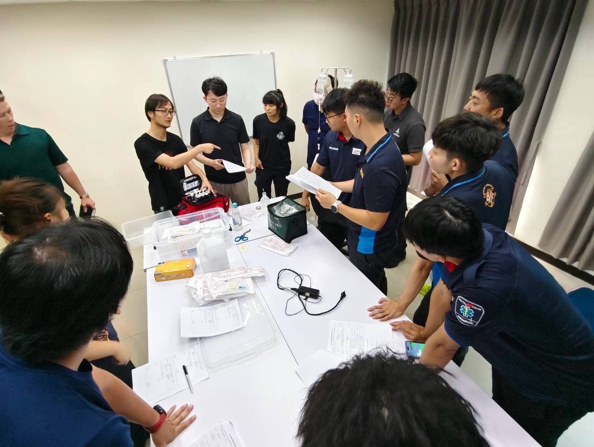
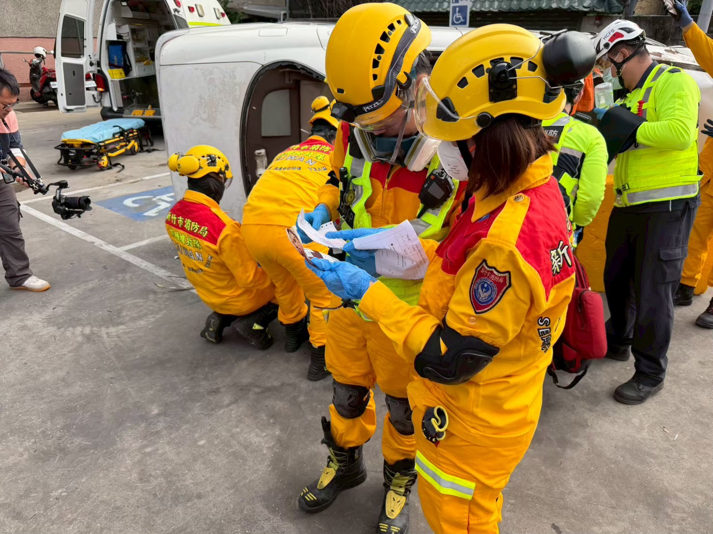

2026 年 8 月刊
台灣緊急醫療救護通訊
立場聲明｜為何救護車上鏟式擔架取代了傳統長背板
主要立場
- 支持城市的救護車以「鏟式擔架」取代傳統的「長背板」，作為搬運疑似脊椎受傷傷病患的標準工具；長背板只保留在少數特殊救援情境（例如困難脫困）使用。
- 傷病患不需要一路躺在硬板上：救護車的擔架床與急診的推床本身就有足夠的支撐，能妥善保護脊椎。
- 改用鏟式擔架後，救護人員與急診的交接更重要：家屬與傷病患請放心配合醫護人員的固定與翻身協助，脊椎是否受傷由醫師以檢查或影像判斷，而不是看「身上有沒有板子」。
為什麼不再用長背板？
長背板是過去數十年救護車上的標準配備，但多年來的醫學研究發現：
- 躺硬板本身會造成傷害——疼痛、皮膚壓傷、呼吸不順，長時間下來更明顯；
- 沒有研究能證明躺長背板可以讓脊椎受傷的結果變得更好；
- 因此，美國、英國、挪威等地的醫學會與官方指引，近年都明確限制長背板的使用。英國的國家指引甚至明文規定：不可以用長背板運送疑似脊椎受傷的傷病患，長背板只能當作救援脫困的工具。
國際觀念已從「把人綁在板子上完全固定」轉為「減少脊椎不必要的晃動」（醫學上稱為「脊椎減移」）：重點是搬運過程平穩、避免多餘的翻動，而不是躺在硬板上。
鏟式擔架是什麼？好在哪？
鏟式擔架可以從中間分開成左右兩片，從傷病患身體兩側輕輕滑入、再扣合起來，就能把人平穩抬起——全程不需要把人翻來翻去。它的優點：
- 搬上擔架時脊椎的晃動比長背板少（使用長背板需要整個人側翻才能上板）；
- 比較舒適，也減少長時間壓迫造成的皮膚損傷；
- 到院後即可拆除：在城市裡送醫時間短，到急診換床後救護人員就會把鏟式擔架拆走帶回，傷病患不必繼續躺在硬板上等待檢查。
就醫時您會看到什麼改變？
臺北市的救護車已於 2025 年 11 月起全面改用鏟式擔架取代長背板，其他縣市也逐步跟進。這代表：
- 送到急診的傷病患身上通常已經沒有任何板子——這是正常的新流程，不代表處置不完整；
- 「沒有躺板子」不等於「脊椎沒有受傷」：脊椎傷害是否排除，由急診醫師透過問診、身體檢查與必要的影像檢查來判斷；
- 在醫師確認脊椎沒有問題之前，翻身、上廁所、換床都請呼叫醫護人員協助，不要自行大幅度移動——這是新流程中保護脊椎最重要的事。
其他考量
- 到目前為止，沒有任何一種搬運板材（包括長背板和鏟式擔架）被證明能改善脊椎受傷後的復原結果。我們推薦鏟式擔架，是因為它「造成的傷害較小、搬運過程較平穩舒適」，而不是因為它能治療脊椎傷害。
- 本說明主要適用於城市地區（送醫距離短、醫院密集）。至於山區、離島或長途轉送等需要長時間搬運的情境，作法也不是回頭使用長背板——國際指引建議把傷病患轉移到救護車擔架床或真空床墊（可貼合身形的軟質固定墊）上運送，避免長時間躺在任何硬質板材上；細節由各地依其特性另行規範。
- 各地推行時，仍需持續收集資料、監測成效，確保新做法確實對傷病患有利。
參考文獻
- 臺北市政府消防局（2025 年 10 月）。自 114 年 11 月 1 日起全面上線使用鏟式擔架取代長背板之公文（北市消護字第 1143050138 號函）。
- 美國外科學院外傷委員會（ACS-COT）、美國急診醫學會（ACEP）與美國急救醫療服務醫師學會（NAEMSP）2018 年聯合立場聲明：Spinal Motion Restriction in the Trauma Patient.
- 英國國家健康與照顧卓越研究院（NICE）指引 NG41：Spinal injury: assessment and initial management. 2016.
- Millin MG 等（2025）。美國急救醫療服務醫師學會（NAEMSP）院前脊髓損傷處置文獻總回顧。Prehospital Emergency Care.

新知分享｜拯救 OHCA 的空中急先鋒：無人機遞送 AED
論文背景與研究方法
院外心臟驟停（OHCA）是全球公共衛生與急診醫學的重大挑戰。雖然各國積極重塑「生存鏈」（Chain of Survival），但全球 OHCA 的整體存活率依然極低，通常僅介於 8% 至 10% 之間。在急救黃金時間內，旁觀者即時實施心肺復甦術（CPR）並在救護車抵達前進行快速電擊去顫，是決定病患能否存活並獲得良好神經學預後的關鍵。然而，儘管許多國家推廣公共場所設置自動體外心臟電擊去顫器（AED），全球旁觀者在救護車抵達前協助電擊的比例卻低於 3%。
為了打破此臨床困境，國際復甦聯合會（ILCOR）基本生命支持工作小組主導了這項系統性文獻回顧，旨在評估利用無人機（UAV）主動運送 AED 的可行性、安全性、時間效益、存活率影響及成本效益。研究團隊全面檢索了 PubMed、Cochrane 與 Web of Science 資料庫（自建庫起至 2024 年 8 月 6 日）。在排除重複、篩選摘要與全文審查後，最終納入了 39 篇具備實證數據的研究，並系統性地分類為以下三大主題進行探討：
- 真實世界觀察研究（n = 3）：分析在真實緊急派遣系統中，無人機運送 AED 的實際表現。
- 模擬飛行與旁觀者質性分析（n = 15）：評估技術可行性、氣候適應力及現場旁觀者的操作體驗。
- 電腦預測與數學模型（n = 21）：運用演算法優化無人機基地配置，並估算存活率與醫療經濟學效益。

三大主題核心研究發現
1. 真實世界觀察研究：瑞典的先驅實證
這三篇真實世界的實證研究皆來自瑞典同一個研究團隊：
- 初期可行性研究：派遣 3 架無人機進行真實疑似 OHCA 救援。在 12 次實際派遣中，有 11 次成功遞送 AED。無人機在 64% 的案例中比救護車先一步抵達現場，展現了極高的運行可靠度。
- 前瞻性觀察研究：擴大至 5 架無人機。在 72 次無人機實際部署中，成功遞送了 58 台 AED（成功率高達 81%）。無人機在 67% 的案例中先於救護車抵達，時間領先中位數達 3 分 14 秒。其中有 6 例成功黏貼了電擊貼片，並有 2 例在救護車抵達前由無人機 AED 完成了去顫電擊。
- 臨床成功案例報告：記錄了一名 71 歲男性在自家門外突發 OHCA，旁觀者立即實施 CPR，無人機比救護車更早抵達並成功釋放 AED。現場利用無人機 AED 電擊 1 次後，救護車隨後抵達並進行後續處置，病患最終順利出院且在第 7 天達到完整的神經學康復。
2. 模擬飛行與質性研究：技術可行性與人機互動
飛行可靠度與極端環境：多項研究驗證了超視距飛行（BVLOS）的技術可行性。德國研究顯示在偏遠地區飛行具備 93.8% 的操作可靠度（僅 4 次因強風或技術問題取消）；奧地利研究證實無人機在複雜山區地形亦能成功執行 29 次模擬遞送。此外，夜間飛行也被證實安全可行，且飛行表現與日間無顯著差異。
時間縮短實證：加拿大研究指出，無人機 AED 比救護車提早 1.7 至 8.0 分鐘送達；Claesson 等人的研究更顯示，在救護車反應時間較長的偏遠地區，無人機平均能比傳統救護車提早 16 分 39 秒抵達。
遞送與安全機制：
- 著陸型（Landing）：無人機直接降落在現場供人拿取，但可能面臨地形障礙與起降碰撞風險。
- 降落傘型（Parachute）：因風向干擾導致精準度不足（落點落差高達 50 公尺），被認為實用性較低。
- 鋼索垂降型（Wire & Winching）：瑞典真實世界採用的主流方式，無人機懸停於空中，將 AED 垂降至地表。實證顯示，91% 的案例能精準降落在距離建築物或患者 9 至 15 公尺的範圍內，且現場安全性極高，無任何嚴重不良事件發生。
3. 電腦與數學預測模型：系統優化與經濟效益
空間配置與城鄉效益差異：預測模型指出，在人口稠密的巴黎，無人機能在 26% 的案例中領先救護車，平均縮短 190 秒。然而，無人機最具革命性的效果是在偏鄉：Boutilier 的研究表明，無人機在都市可縮短 6 分 43 秒，而在偏遠鄉村則可大幅縮短達 10 分 34 秒。
基地配置的取捨（Trade-off）：斯德哥爾摩模型顯示，若將 10 架無人機部署於高 OHCA 發生率區，可領先救護車覆蓋 69% 的病患，但平均僅縮短 1.5 分鐘；若將其優先部署於救護車延遲嚴重的區域，雖僅能覆蓋 3% 的病患，但平均可縮短達 19 分鐘的漫長等待。
存活率躍升與成本效益：
- 存活率預估：多個模型推估，結合無人機與社區先遣志願者系統，能將 OHCA 存活率從現有的水平提升至 15.8% 至 64%。
- 高性價比：相較於在社區建設密集的固定式 AED（每平方公里成本約 €2,500），建置無人機網絡的成本僅約每平方公里 €1,000。多項經濟模型計算出的「增額成本效益比」（ICER）介於 €791 至 €14,548/QALY 之間，完全低於高收入國家的醫療效益閾值，極具經濟推廣價值。
給三大族群的簡明實務建議與須知
消防救護人員：系統協同與派遣優化
- 協同派遣，而非互相取代：無人機是爭取第一時間的先鋒，必須與現有的救護派遣、消防救護車、甚至是志願者先遣系統（Volunteer Responders）進行協同派遣。
- 編寫無人機專屬派遣指令（Drone-Specific Instructions）：消防派遣中心必須建立 SOP，在線上明確指引目擊民眾何時可以安全接近無人機（或拿取垂降的 AED），並排除大眾對旋翼的恐懼。
- 環境與備援管理：派遣員必須掌握強風、大雨、低能見度等可能導致無人機停飛的氣候限制，並隨時準備啟動常規救護車備援。
醫療指導醫師：協議制定與系統品質控管
- 制定安全與派遣協議：確立無人機適應症派遣常規（Protocols），將「空中懸停、鋼索垂降」等安全技術與法律規範納入救護常規。
- 整合科技與先遣網絡：主導無人機系統、社區志願者與常規 EMS 的多層次整合，並將「無人機送達至電擊時間」納入系統品質管理。
- 推動品質指標優化：利用視訊指導（Video Instruction）等數位工具優化民眾按壓與電擊品質，提升整體存活率。
急診醫師：優化院前與院內復甦鏈的銜接
- 保存首次可電擊心律：理解無人機提早遞送 AED 對「可電擊心律」的決定性影響，於黃金時間電擊能避免心肌惡化，大幅提高 ROSC 與存活率。
- 優化復甦對接：將「無人機遞送時間」納入品質分析，優化院內後續目標溫度管理（TTM）與冠介入治療（PCI）的流程銜接。
結論與未來展望
本 Scoping Review 證實無人機運送 AED 在技術、臨床與經濟上具極大潛力。目前全球推廣的最大瓶頸在於法規限制，尤其是缺乏超視距飛行（BVLOS）及緊急醫療空域管理的成熟 UTM 法規。未來需更多真實世界整合性研究與法規鬆綁，才能打通黃金生存鏈的最後一哩路。
發展紀實｜從露營冰箱到認證課程：新竹地區到院前輸血發展紀實
一、新竹市：2025 年 9 月，一個露營冰箱與一群願意先做再說的人
新竹地區到院前輸血的發展，新竹市與新竹縣雖走的是各自不同的時間軸，但最終共享經驗、共同進步，一起走到現在並準備一同架構起初步的認證體系。新竹市於 2025 年 9 月由新竹馬偕紀念醫院與新竹市消防局救護科、搶救科，加上新竹市衛生局與馬偕醫院檢驗科，召開協調會議，訂立了「特搜雙軌到院前輸血救援流程」的雛形，並隨即於 12 月初由新竹馬偕與新竹台大合作，進行了「雙軌救援暨跨院輸血轉送」的模擬演習。
當時沒有醫療級的血品冷鏈設備，團隊以基本的溫控露營冰箱與檢驗科既有的保冷器材，搭建出一套尚未經過驗證的克難冷鏈系統。操作方式也很直接：由醫護人員親自帶著血品出勤。這不是理想的長期解方，但它讓「血能不能到院前」這個問題，從紙上討論變成了可以實際演練的流程。
二、新竹縣：2025 年底醫顧會確認，地方重要醫院表態是流程能否往下走的關鍵
新竹縣的發展則有自己獨立的起點。任何一項到院前處置，若沒有供血醫院與醫療指導醫師的正式背書，終究只能停留在演習層次。2025 年底，竹縣醫療顧問委員會會議中，竹縣唯一重度級急救責任醫院東元醫院的指導醫師首度表態，確立了竹縣到院前輸血的發展方針。這是竹縣流程能否從「討論」走向「制度」的分水嶺。
今年二月，新竹縣衛生局委由筆者規劃，舉行竹竹地區各大主要醫療機構與消防單位共同參與的到院前輸血專家指導會議，邀請新北快搜、三軍總醫院白豐誠醫師與奇美醫院林毅醫師到場分享實務與理論經驗，為新竹縣市團隊提供了外部經驗的對照。到了四月，竹縣 EMTP 複訓課程首次納入到院前輸血的基礎認識，讓二月會議中累積的觀念，開始廣泛落實到第一線人員的訓練內容中。

三、停滯期：問題不在意願，而在系統
會議與演習之後，發展一度陷入沉寂。原因並非缺乏意願，而是幾項具體的系統性缺口：第一線人員流程認知不足、救助與救護單位間的協作文化尚未建立、血品相關知識不足、技術訓練與操作自信不足，以及醫護出勤人力有限。這些都不是靠一次會議或一場演習能解決的問題，而是需要持續投入的基礎工程。這段停滯期值得記錄，因為它說明了到院前輸血計畫的推動，瓶頸往往不在臨床實證是否足夠，而在人力、訓練與跨單位協作是否到位。
四、重新啟動：從委員會支持到 8 小時認證課程
今年年中，竹縣醫療顧問委員會再次討論後，東元醫院在醫療指導醫師的努力下，確立的該院輸血委員會的支持立場，下半年新竹縣到院前輸血流程發展正式納入進度。基於新竹縣市至今累積的經驗與缺口，需要一套較大規模、系統化的教育訓練，而非片段式的講座，讓到院前輸血文化能夠深入 EMTP 的認知，讓啟動、操作、交接、品管能夠順暢執行。
於是新竹馬偕紀念醫院急診醫學部與醫事檢驗科，聯合東元綜合醫院、新竹縣政府消防局、新竹市消防局、苗栗縣政府消防局、新竹捐血中心、新北市政府消防局特種搜救隊、美國在台協會，共同辦理第一梯次「竹竹苗地區高級救護技術員（EMT-P）到院前輸血 8 小時技能認證訓練」，目標訓練 35 位 EMT-P，在竹市流程完備化及竹縣流程初始化的同時，就能同步完成深入且全面的訓練。
課程權重分配上，血品專業由新竹捐血中心負責（40%），涵蓋血品認識、冷鏈管理標準與國內外規範；臨床決策與操作指引由消防局醫療指導醫師負責（40%），涵蓋啟動判定、輸血反應處置與流程制定；國內外實務經驗分享則由第一線新北快搜教官及美方教官負責（20%）。8 小時內完成理論授課、分組技術操作與最終筆試及情境術科考核，考核通過者須再經醫院輸血操作實習，由指導醫師與護理師簽核後，方能取得到院前輸血操作認證通過證明。預計未來每年都需要進行複訓。


五、技術路線的選擇：先求穩，再求全
策略上，新竹地區並未一開始就朝向全血輸注推進，而是分階段規劃：以冷藏 O 型紅血球作為初始模式，仰賴既有急救責任醫院與消防單位合作的冷鏈物流；低效價 O 型全血列為進階發展模式，待跨單位資源到位後再逐步推展，預計往「醫院檢驗，捐中發血，醫院供血」的合作模式前進；行走血庫（Walking Blood Bank）則定位為重大事故的緊急備援機制，依衛生福利部相關指引執行。透過近年城鎮韌性演習的發展，由院內優先確立 WBB 執行樣態後再往院前推進。
這樣的順序安排，反映的是一個務實的判斷：與其一次到位追求最完整的血品組合，不如先讓最基本、最容易驗證的環節穩定運作，再逐步擴充。
臨床適應症的判定，也依循國際文獻（如 NAEMSP 立場聲明與 2025 年民間 EMS 到院前輸血臨床照護指引）並結合本地條件調整，包括 Trauma ABC score、成人與高齡患者不同的收縮壓門檻、休克指數，以及 E-FAST 等評估工具的納入，同時明訂知情同意、輸血中監測頻率、藥物給予標準與輸血反應處置流程，並要求所有個案皆須密錄器影像記錄、交由醫療指導醫師全案回顧。
六、下一步
新竹地區的到院前輸血發展，目前仍處於建立基礎能力的階段：一套初步建立的跨單位訓練架構、一群願意持續投入的院內及院前長官與基層，以及對自身限制有清楚認識的規劃態度。在兩至三梯次標準化認證課程之後，下一階段的重點會是實際個案的品質回顧、冷鏈系統的正式驗證，以及與擴充供血醫院網路、建立偏鄉物流系統，並發展更穩定的跨院協作機制。這段紀錄從一個露營冰箱開始，走到今天的正式認證課程，過程並不快，也稱不上順利，但每一步都留下了可以檢視、可以修正的紀錄。這或許正是地方到院前輸血系統，能夠一步步走得下去的方式。
近期活動
【救護 × 執法】救在當下：CIT 跨域整合與專業實務國際研討會
活動時間：115 年 9 月 9 日（星期三）～ 9 月 10 日（星期四）｜活動地點：大坪林聯合開發大樓 15 樓國際會議廳（新北市新店區北新路三段 200 號）
指導單位：內政部 主辦單位：內政部消防署 協辦單位：衛生福利部、內政部警政署、國防部軍醫局
國際講者：Roy Eckerdt、Matthew Moody（CIT International）、Jon Graziani（PSRFA）、Tyler Verhaar、Jeff Swenson（Seattle Police Department）
本研討會以「救護 × 執法」為核心，邀集臺美 CIT、警政及緊急醫療專家，分享危機處理制度、跨域現場處置及 TEMS 實務，透過國際經驗與工作坊，強化消防、警政、衛政等第一線人員的跨域協作與現場應變能力。
2026 醫療救護與緊急應變國際研討會（PERIC 2026）
活動時間：115 年 10 月 2 日（星期五）～ 10 月 3 日（星期六）｜活動地點：臺北北投會館
主辦單位：國立臺北護理健康大學、台灣醫療救護學會 大會主題：緊急救護的韌性與科技（Resilience and Technology in EMS）
相關連結：https://perictsp.org/index-zh.html
PERIC 2026 匯聚美國、澳洲、沙烏地阿拉伯、新加坡及台灣 EMS 專家，以「緊急救護的韌性與科技」為主題，聚焦到院前創傷科技、災難醫學、創新救護教育及智慧醫療，促進國際緊急醫療救護的學術與實務交流。
2026 第十二屆全國呼吸道插管暨心肺復甦術競賽
活動時間：115 年 10 月 2 日（星期五）08:00～18:00｜活動地點：台南香格里拉（臺南市東區大學路西段 89 號）
指導單位：內政部消防署、衛生福利部 主辦單位：社團法人中華緊急救護技術員協會 協辦單位：臺南市政府消防局
競賽項目：呼吸道插管、一般 CPR+AED、MCPR-LUCAS
本競賽透過呼吸道插管、CPR+AED 及機械式心肺復甦等實務競技，促進全台 EMS 人員到院前緊急救護技能交流，強化呼吸道處置與基本救命術能力，並提升社會對救護技術員及到院前 EMS 專業的認識。